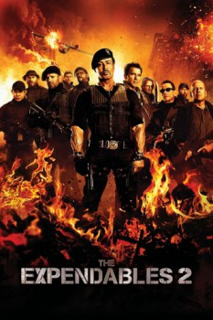

Country:United States, 103 minutes
Spoken languages:English
Genres:Action, Adventure, Thriller
Director(s):Simon West
Writer(s):Richard Wenk, Sylvester Stallone
Video Codec:Unknown
Number: 3342

Certification:R
Storyline:
Mr. Church reunites the Expendables for what should be an easy paycheck, but when one of their men is murdered on the job, their quest for revenge puts them deep in enemy territory and up against an unexpected threat.
Cast:
Sylvester Stallone (as Barney Ross), Jason Statham (as Lee Christmas), Jet Li (as Yin Yang), Dolph Lundgren (as Gunner Jensen), Chuck Norris (as Booker)
Medium: Media file,
Location: D:\The Expendables\The Expendables 2.mp4
Loaned: No
Aspect ratio: Unknown